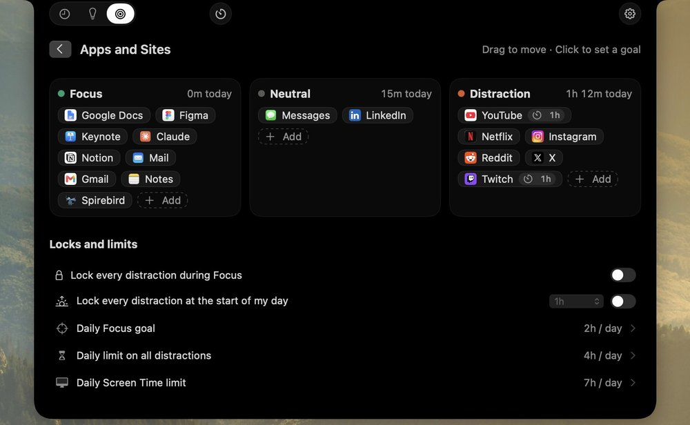
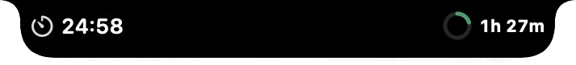
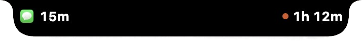
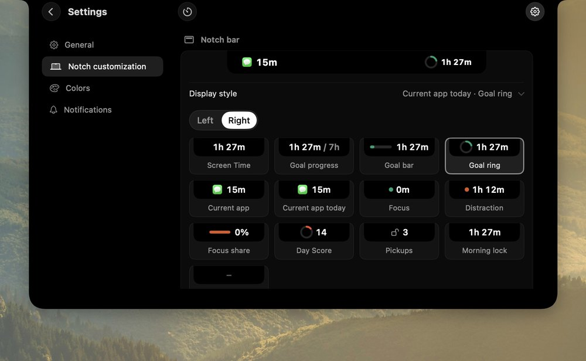
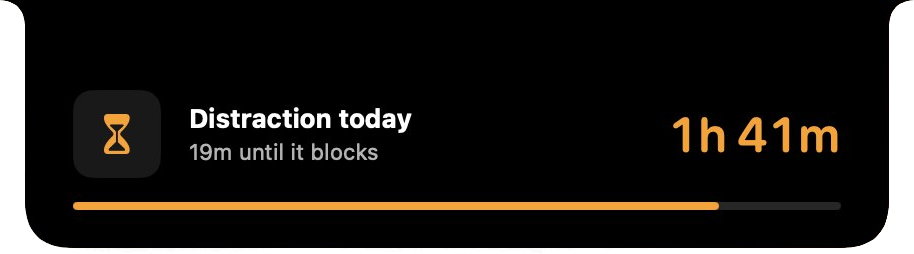
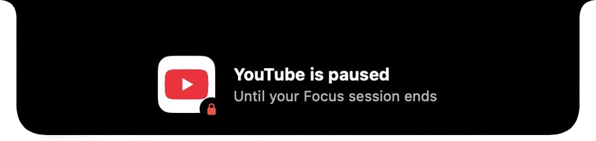

Guide
How to use your MacBook notch to see where your time goes
The black strip at the top of your screen holds a camera and nothing else. Here is how to make it tell you where your day went, while it's still going.
First, what is the notch?
It's the black cutout at the top of every MacBook Pro since 2021 and every MacBook Air since 2022. The camera lives in it, and the menu bar fills the space on either side.
The notch itself does nothing. You can't click it, and no menu can sit there. It's the one part of your screen you look past a hundred times a day without reading anything.
That's what makes it a good place for a number you should see often but don't want to go looking for, like how long YouTube has had you today. NotchTime puts it there. If your Mac has no notch, or you're on an external display, the same panels drop from the top center of the screen you're using.
The whole app, in three moves
- Hover the notch. A small glance appears beside it: a focus timer on one side, today's screen time on the other, and your top sites underneath.
- Click it, or press ⌃⌥⌘N from anywhere, and the full analysis grows out of the notch: your day, week or month, Insights and Goals.
- Move on. Press Esc or click somewhere else and it folds back into the notch.
Everything else happens on its own. There's no window to keep open and nothing to start each morning.
It counts what you watch, not what's open
Most screen time trackers count a tab the moment it's in front. Leave YouTube paused while you answer an email in another window and that's an hour of YouTube, apparently.
NotchTime checks every few seconds which tab is in front and what macOS says is playing. A minute only counts as watching when the two match. Audio from a tab in the background counts as listening, kept apart, and music never counts as a distraction. A paused video is just open.
It works with Safari, Chrome, Arc, Brave and Edge, and every site shows up by its own name and icon. Time in every other app is tracked without asking for any permission. Private windows count as time only, with no site names.
Sort your apps, once
Every minute goes into one of three buckets: focus, neutral or distraction. Work apps and sites start as focus, feeds and video sites as distraction, and everything else as neutral.
You'll disagree with some of that, and you should. Drag an app from one bucket to another, or right-click any app, site or even a single page to move it. A YouTube tutorial can be focus while the rest of YouTube stays a distraction. Changes apply to past days too, so your history always matches how you think about your time today.

The best part: a nudge while it's still happening
Screen Time tells you on Sunday that you spent nine hours on YouTube last week. By then there's nothing to do with that number.
NotchTime tells you at the time. At every full hour on a site, a small panel grows out of the notch, says 1 hour of YouTube today, and folds back in after 7 seconds. There are no buttons and no decision to make. You just find out, and do what you like with it.
There's also a nudge at each full hour of distraction in a day, across every app and site in that bucket, and once a week a short recap of how last week compared with the one before.
Nudges never show up when you share your screen, join a call or record. Set quiet hours for the times you don't want them, or turn them off site by site.
Leave a number beside the notch
You don't have to open anything to know how the day is going. Hover the notch and the glance shows two things, one on each side, and you pick which.


The choices include today's screen time, the app you're in and how long it's had you today, focus or distraction so far, a goal ring, yesterday's Day Score and pickups. Settings draws every option as it would look, next to a live preview.

Read your day as one strip
Open the analysis and the day is a single strip: focus in green, distraction in orange, neutral in gray, with a white dot wherever a nudge came. Under it, the apps and sites that took the most time, with how much of that was watching.
Week
A lane per day, hour by hour, then the week split into mornings, afternoons, evenings and nights, each with its top apps. This is where you notice that evenings are where the distraction lives.
Month
A square for every day since you started, colored by how it leaned. Good weeks and bad ones stand out without reading a single number.
Find out what your good days have in common
After three days of use, Insights opens up. It shows focus and distraction a day for the last 7, 30 or 90 days, each against the stretch before, and a short list of patterns. A pattern only appears when your data backs it, so some weeks there are fewer.
Beside them sits the Day Score: one number out of 100 for yesterday. It weighs your focus, your longest focus stretch, distraction, whether the morning started clear and whether the night stayed quiet, all against your own usual day. It never streaks and never compares you with anyone else. Hover it to see what helped most and what held it back.
Set a limit that can say no for you
Knowing isn't always enough. Goals let you set a daily limit on your total screen time, on distraction, or on a single app or site.
Any goal can warn you from the notch as you get close, and then block once you reach it. Blocking is gentle: the app hides and the tab goes blank, but nothing is quit and no work is lost.

Two locks work without a limit:
- Focus lock keeps distractions paused while a focus session runs, and opens them again the moment a break starts.
- Morning lock keeps the first hour of your day clear of distractions, counted from whenever your day actually begins.

Blocking
Every lock can be switched off. They're there to make the good choice the easy one, not to argue with you.
A focus timer, already in the notch
Hover the notch and start a focus from the glance. It counts down beside the notch: 25 minutes on, 5 off, and a longer break every fourth round, all adjustable. Pair it with the Focus lock and the sites you'd drift to stay shut until the break.
Focus timer
The small things
- Pickups. Every unlock of your Mac counts, shown under the day's total or as a daily average.
- Colors. Pick Vivid, Calm, Ocean or Berry, or set your own, and every chart re-colors at once.
- Hidden from screen shares. The glance and every nudge stay off calls and recordings.
- Stays on your Mac. Everything is stored locally. Nothing is uploaded, and there's no account.
Colors
So what does a normal day look like?
You open the Mac and the Morning lock keeps the feeds shut for the first hour, so the day starts with the work instead of the news. You start a focus from the notch, and when you reach for X halfway through, it's paused until the break.
After lunch a video turns into three. At the hour, the notch says so, and folds away. You close the tab, or you don't, but you knew. Late in the afternoon a warning drops from the notch: 19 minutes of distraction left before it blocks.
The next morning, Insights gives yesterday a 74 and tells you the long focus stretch before lunch is what carried it.
You never opened Screen Time. You never had to remember to look.
What it costs
NotchTime is a one-time purchase with updates included. No subscription, no account. It needs macOS 14 or later, and if it doesn't fit how you work, you can get a refund within 14 days.
Your notch has been holding a camera this whole time. It can do a little more than that.
See where the hours really go
Hourly nudges, a timeline of your day, Insights and goals, all from the notch.
Get NotchTime